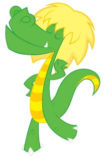

A cuca é conhecida popularmente como uma bruxa velha e feia, que tem cabeça de jacaré e que rouba as crianças desobedientes. Essa personagem do folclore brasileiro se originou através de outra lenda: a Coca, um dragão comedor de crianças desobedientes que fica à espreita nos telhados das casas, uma tradição trazida para o brasil pelos portugueses. Diz a lenda que a cuca rouba as crianças que desobedecem seus pais. Ela só dorme uma noite a cada 7 anos, então os pais usam a lenda para dizer às crianças que se elas não dormirem na hora certa, a cuca virá para pegá-las. A cuca ficou ainda mais famosa ao aparecer como personagem nos livros do sítio do pica-pau amarelo de Monteiro Lobato e na série de televisão inspirada nas obras.
